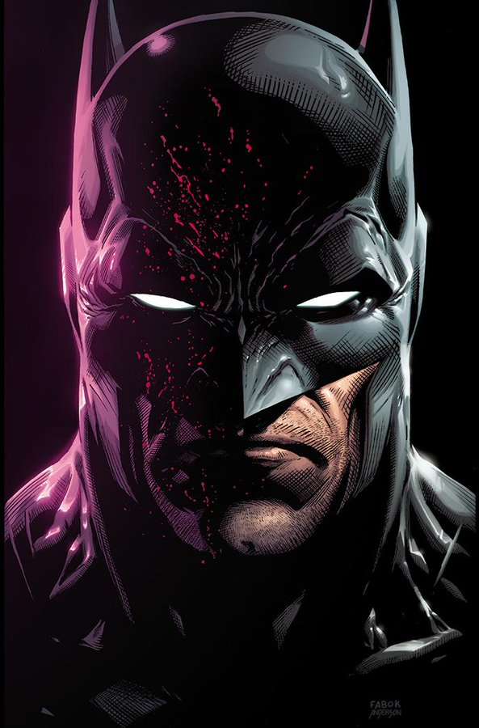

Quem é o Batman?
Batman (Bruce Wayne) é o personagem da DC Comics que atua como justiceiro de Gotham.
Ele não tem
superpoderes: sua força está em treinamentointeligência e recursos (ou seja,
rico).
Nas histórias, Gotham costuma representar problemas sociais reais:
desigualdade, corrupção e violência urbana.
Muitos quadrinhos usam Batman
como forma de crítica social, mostrando como decisões políticas, interesses econômicos,
falhas nas instituições e o autoritarismo afetam o cotidiano das pessoas, especialmente nas periferias.
Galeria
